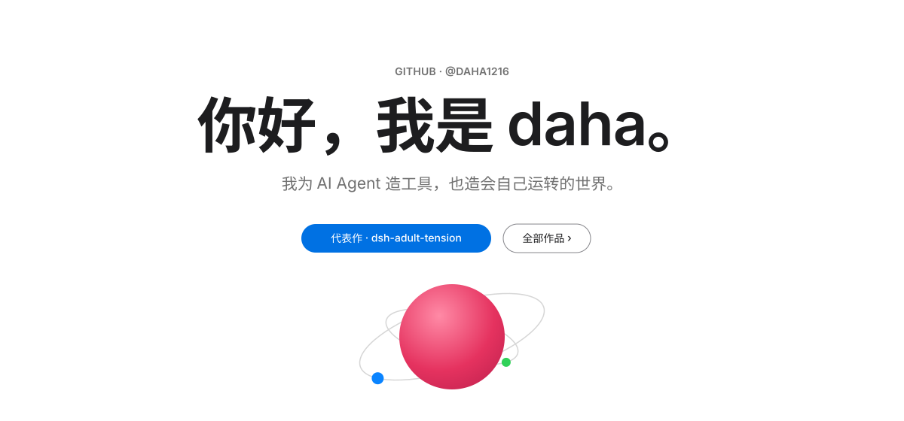
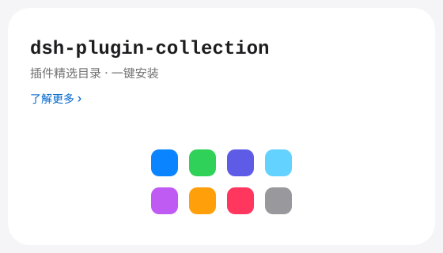
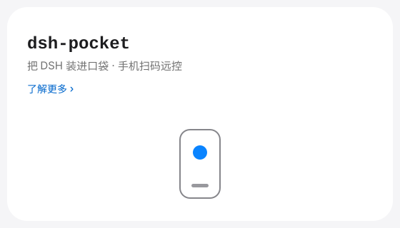
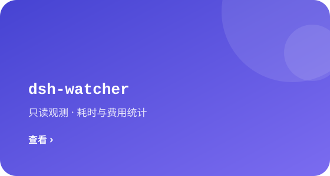
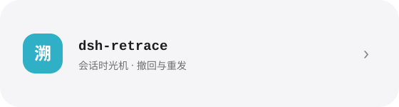
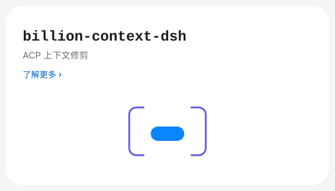
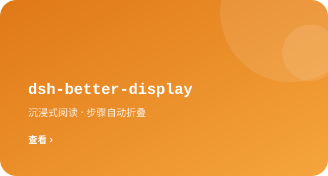
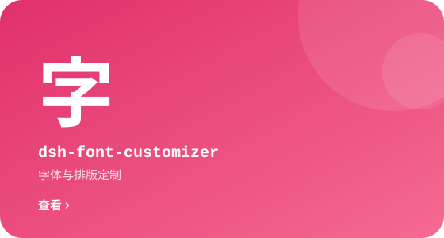

 |  |
 |  |
 |  |
 |
工程日志 · ENGINEERING LOG
定位 — 这是 daha 的个人主页，不是 DSH 的产品发布页：以白色画廊陈列「我在造的东西」，生态叙事退到作品背后。
设计体系 — Apple 白色画廊（REV 4.2）：hero 之后全部为「产品瓷砖」语法——旗舰 = 全宽 #F5F5F7 色带 + 居中大标题 + 深色「世界轨道」产品图；模块 = 整面 iOS 渐变瓷砖（96px 身份汉字 + 仓库名 + 职责 + 白色链接）。界面单色，唯一蓝线 #0071E3/#0066CC；彩色只属于产品图，浅深两态同图。规格详见 DESIGN.md。
备份 — REV 3.0（Apple 白卡 + 投影体系）封存于 backup/rev3-20260930；初代白卡 v1 于 backup/pre-redesign-20260930；PCB 背板草案于 backup/pcb-draft-20260930。
维护哲学 — 每个模块只做一件事 · 观测优先于控制 · 本地优先，云可选。